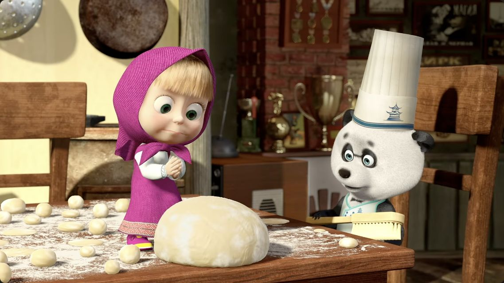

Bear’s house — resolving the wall return
The bare-wall footage separates the permanent angled return from loose wallpaper. Compare both reference shots, then inspect the connected plan. Clean flat materials only: no porridge stains, soot, wallpaper or textures.


Arrows show the overview directions; long camera distances are compressed to fit the plan. Views 5/6 share an angle. Teal dashes: open kitchen–living floor connection. Amber dashes: proposed perimeter.
Removed the mistaken solid pier. Moved the foreground timber left and forward, lengthened the flat side wall, and opened the rear-wall gap beside the fireplace. The kitchen moves as one group and the circulation route passes in front of its table.
Exact dimensions and camera matching remain inferred. New footage confirms a separate tall stair flight near the entrance; its full route, upper destination and relationship to the curtain need a dedicated layout pass. All materials are flat colors. Texture, artwork and surface-detail work remain on hold.
Evidence and the corrections to the earlier plan
| Relationship | Reference | What changes |
|---|---|---|
| Kitchen → fireplace | Episode 24 · 1:52.8 | Open shared floor beside the cooking-wall post; no invented kitchen door. |
| Bookcase → curtain | Episode 17 · 5:45 | Curtain moved beside the reading group, around the room. |
| Blue entrance | Episode 17 · 4:10 | Short steps reach the door. Episode 26 additionally reveals a separate tall stair flight; these are distinct structures. |
 2:18 · Separate stair flight
2:18 · Separate stair flight